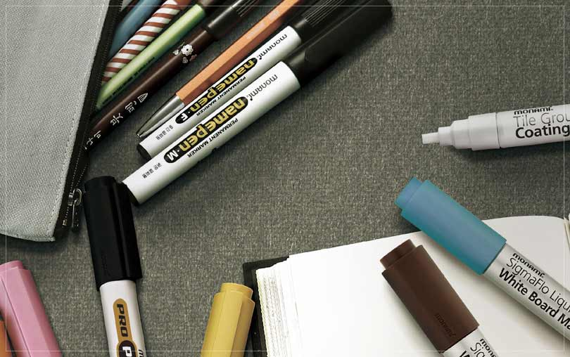
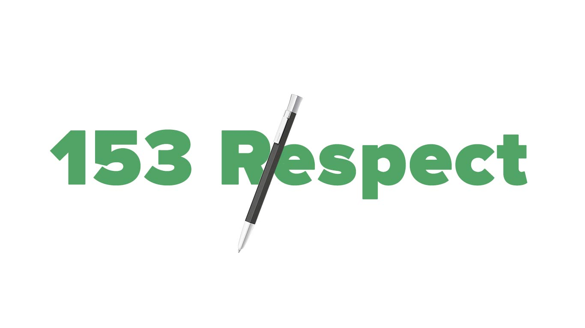
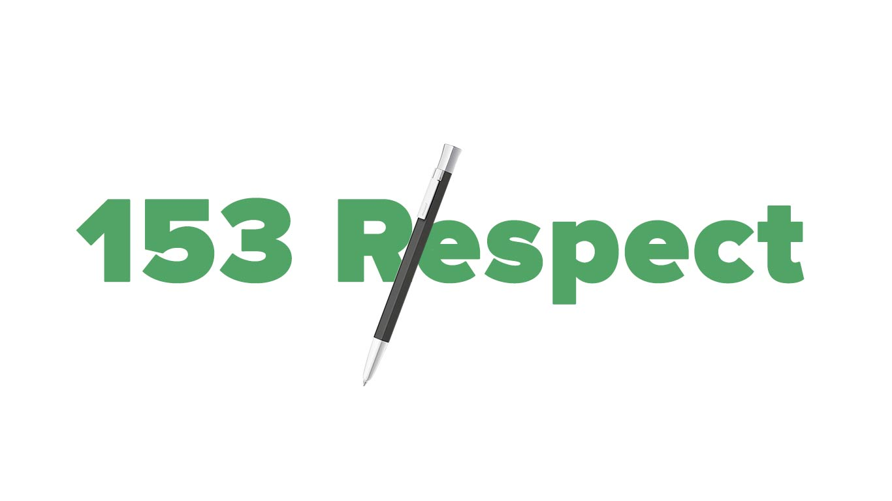

OUR STORY
Whenever and wherever you need...
Monami's product are always with you.
Monami is Korea’s leading stationery company.
Monami has been present in the daily lives of consumers with a philosophy,
“A pen readily available for anyone, anyplace, anytime.”
Ballpoint pens and markers that are always found on desks.
Board Markers used in class-rooms and Permanent Markers that are used to label personal belongings...

MONAMI'S 50 YEARS
Monami is recognized for the expertise and Technological competence brought on by the establishment of the in-house Research Institute. The Monami Research Institute is made up of researchers who work in teams set up According to writing instrument categories. Due to this effort, Monami has obtained capabilities to manufacture its own ink and develop new technologies. “SigmaFlo” is a globally patented technology developed by Monami using liquid ink. The pen maintains crisp ink consistency until it runs out completely. We also have a manufacturing facility in Thailand Which is equipped for self-sufficient production with optimized specifications. With the diverse product lines, Monami responded swiftly to the shifting trends and consumer preferences by planning the future in the new areas such as industrial, and lifestyle, not just as an everyday writing instrument company. Monami will continue to experiment and pioneer the way to provide pens for people and places that need them.
 Learn more

Learn more
Learn more

Learn more